宜品乳业成立于 1956 年，是一家集牧草种植、牧场养殖、产品研发、产品加工、实验检测、终端销售、客户服务于一体的全产业链布局的跨国集团公司。2021 年 6 月宜品乳业与华与华正式开启合作，经过企业诊断，我们发现宜品目前的企业经营模式和市场发展趋势不匹配，资源投资分散。结合企业资源禀赋和市场发展趋势分析，我们确定了宜品企业战略重心即聚焦集团品牌，将宜品打造为羊奶粉第一品牌。基于这个企业战略，我们打造了宜品的超级符号、品牌谚语和全新产品包装。
#华与华新作#宜品纯羊奶粉品牌谚语
▲华与华为宜品纯羊奶粉创意的品牌谚语
一切战略都是话语战略，品牌是一套话语体系，用话语创造品牌价值，降低传播成本，一句话说动购买。
羊奶粉分为纯羊奶粉和半羊奶粉，市面上一些所谓的纯羊奶粉严格意义上讲属于半羊，最大的区别在于配料中的乳糖，因原料、技术等问题，一些品牌会在配料中会额外添加乳糖，而这个乳糖并不全来源于羊，有一部分是牛乳糖。宜品则是真正的纯羊奶粉，它掌握了制造纯羊奶粉的核心原料-脱盐羊乳清粉的供应链及技术，因此原料均来源于羊，且有权威第三方 DNA 检测机构认证。
建立新品类，赢得解释权。用“品牌+品类”形成一个传播词组，让词语的权能大于话语。我们将宜品与新品类名称“纯羊奶粉”进行结合，以“宜品纯羊奶粉”这个品牌名+品类名组合的形式进行传播，并创作了品牌谚语：“宜品纯羊奶粉，不含 1 滴牛乳”，发挥了产品与生俱来的戏剧性，“不含 1 滴牛乳”也为鉴别纯羊奶粉提供了最直接的方法，是终端的最强杀手锏。
#华与华新作#
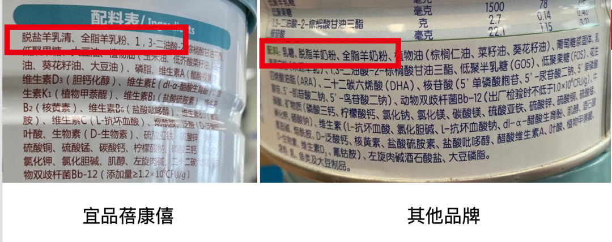
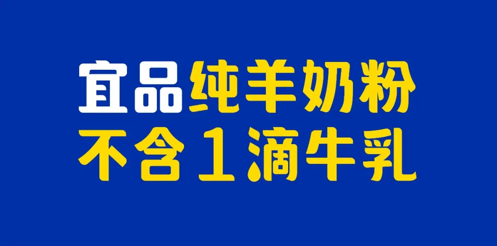
宜品纯羊奶粉超级符号
▲华与华为宜品纯羊奶粉创意的超级符号“宜品纯羊公主”
用超级符号展现品类价值奶粉行业中，羊奶粉的价格往往比牛奶粉高一些，在创意宜品的超级符号时，我们考虑让超级符号代表宜品的同时还需体现出品类价值，同时因为行业的特殊性，这个超级符号还要遵守婴配粉行业的各种法规。生产纯羊奶粉最核心原料的两大自有工厂均布局在西班牙，基于品类和企业的资源优势，我们创作了一只具有欧洲皇室贵族特征的羊公主，将其作为宜品的超级符号。

▲华与华为宜品纯羊奶粉创意的超级符号“宜品纯羊公主”
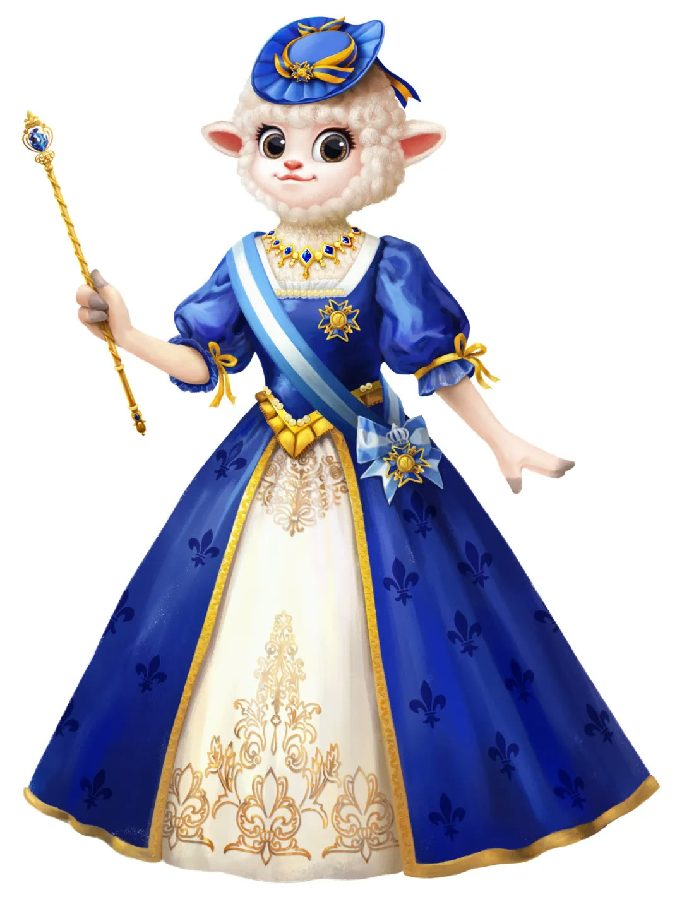
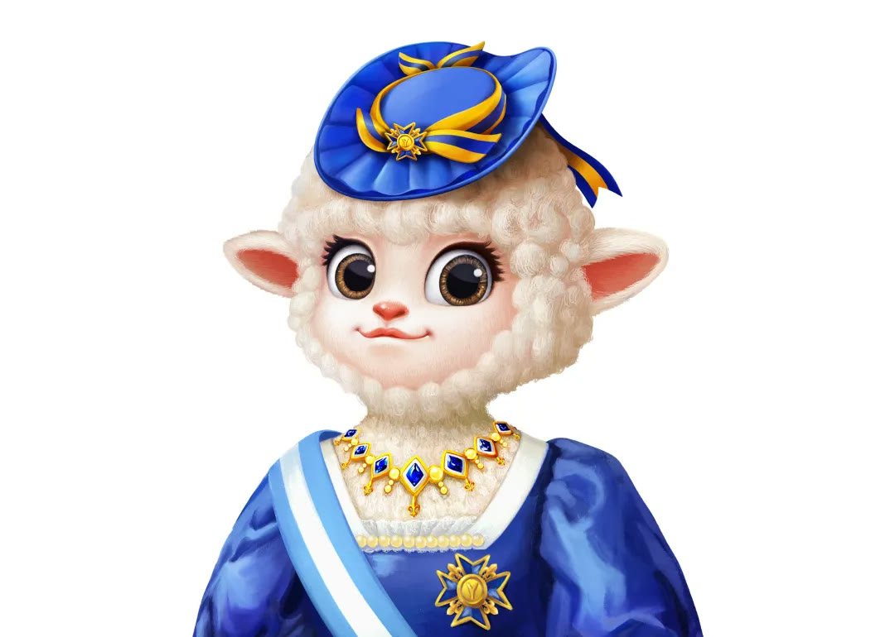
没有创意战略等于 0 ，没有手艺创意等于 0 。宜品纯羊公主采用了新古典主义油画技法，五官、毛发、服饰等每个部位都经过了精心刻画，经得起放大查看。纯羊公主形象中的帽子、项链、勋章、绶带、服装暗纹、权杖等这些元素也均来取自于欧洲皇室贵族的形象中，每个细节都经过精心设计。
▲“宜品纯羊公主” 3D 模型图
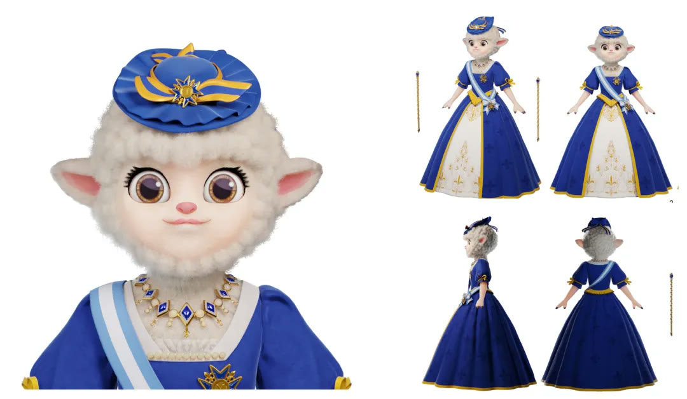
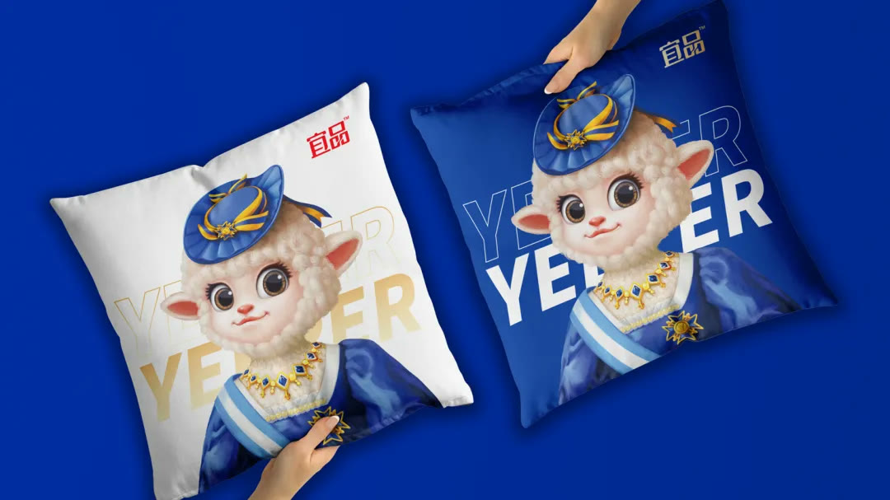
▲“宜品纯羊公主”设计秀稿图
▲“宜品纯羊公主”表情包应用
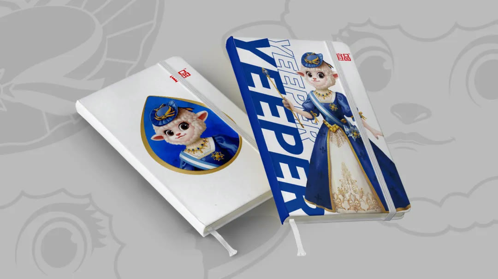
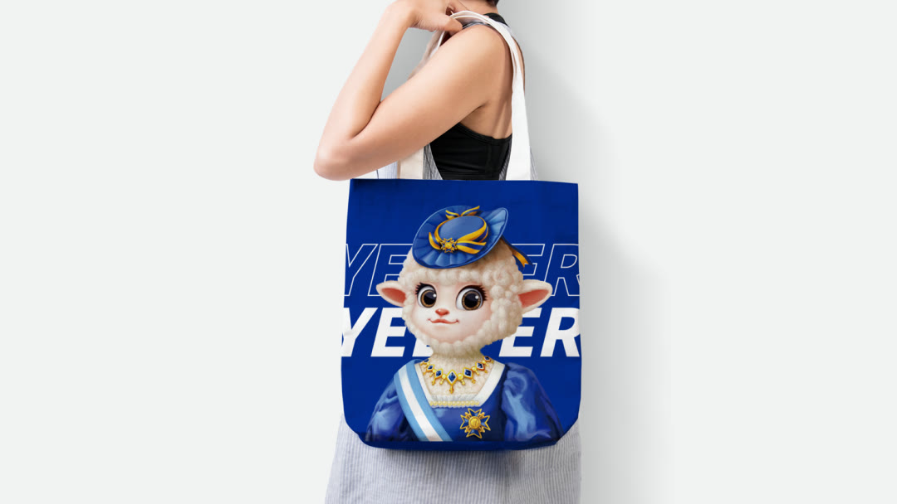
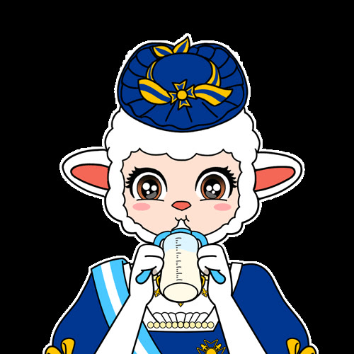
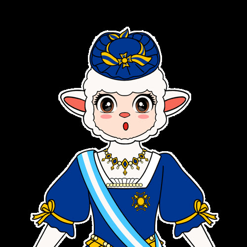
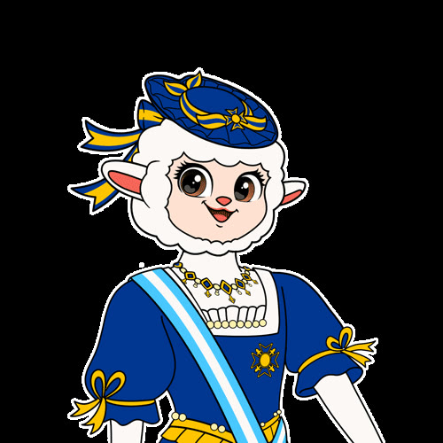
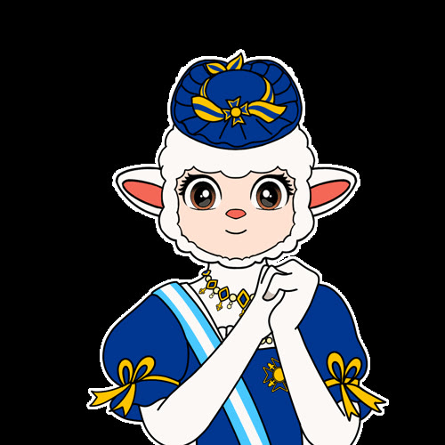
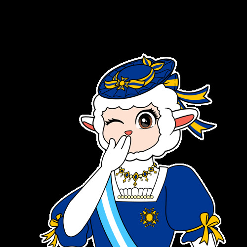
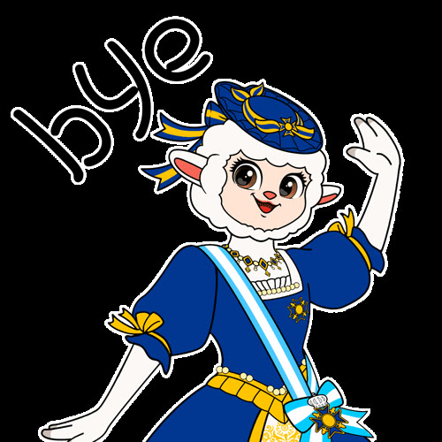
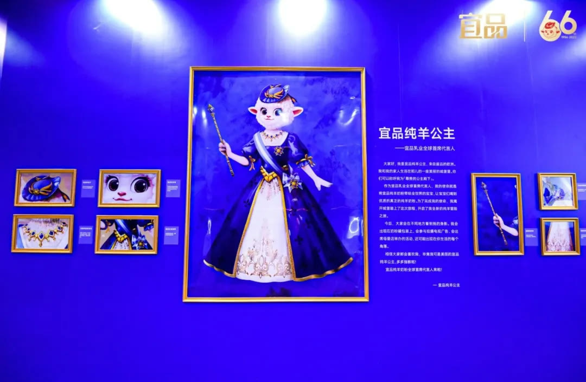
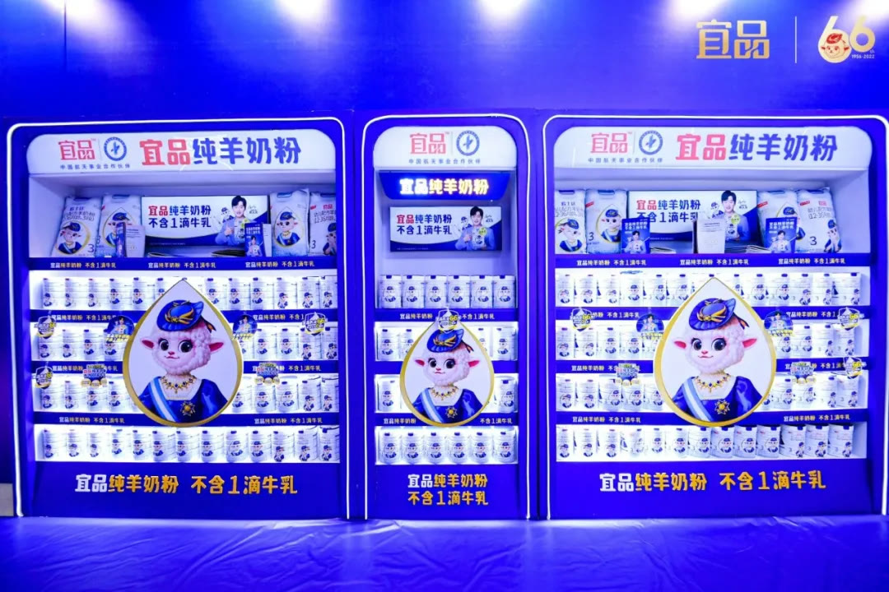
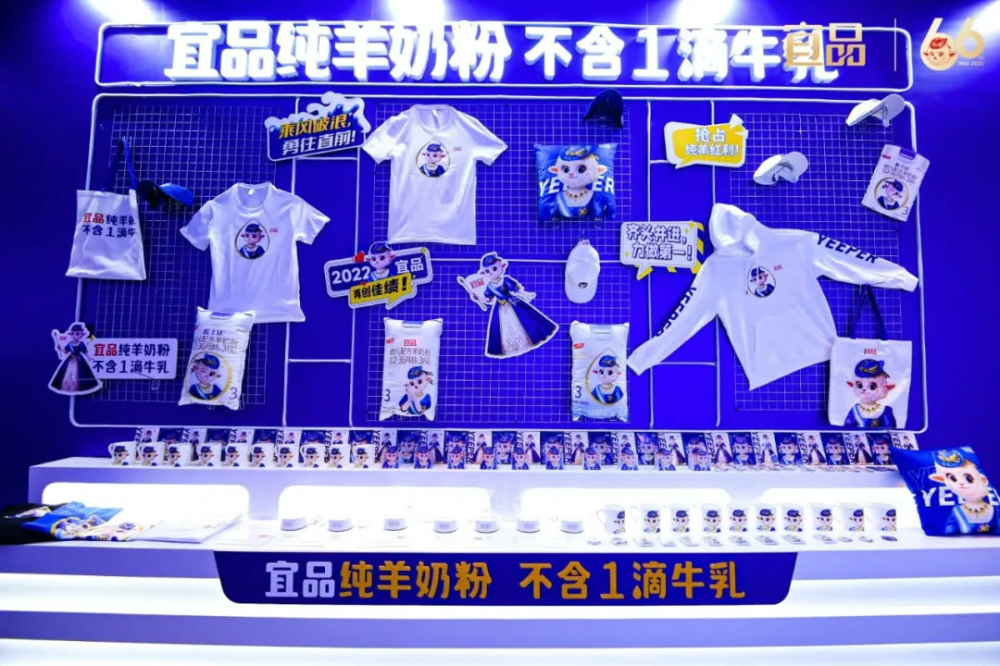
▲“宜品纯羊公主”在宜品 66 周年庆上重磅亮相
目前，宜品纯羊奶粉全新包装也正在落地中。宜品纯羊奶粉，不含 1 滴牛乳！欢迎各位奶爸、奶妈前往各大母婴店购买宜品纯羊奶粉。
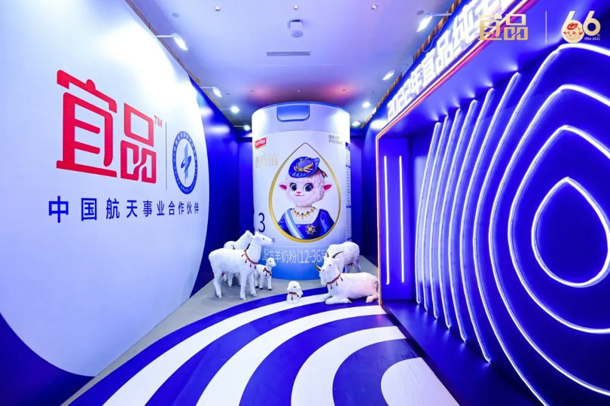